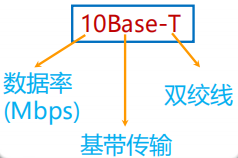

复习碎碎念
约 2621 个字 6 张图片 预计阅读时间 17 分钟
丢一些自己在复习的时候觉得可能有用的东西
一些中英文对应关系(计网介绍)
网络边缘 Access Layer 或者 Network Edge，但是书上没有找到
网络核心 Network Core，书上好像说Core Network多一点，也可以叫Core Layer
端系统 End System
分组交换(包交换) Packet switching
存储转发 store and forward
网络协议 network protocol
封装 Encapsulation
解封装 De-encapsulation
协议数据单元 PDU Protocol Data Unit
吞吐量 throughput
有效吞吐量 goodput
病毒 virus
蠕虫 Wrom
拒绝服务攻击 DoS Denial-of-Service Attack
僵尸网络 botnet
数据包嗅探 packet sniffing
IP欺骗 IP spoofing
一些中英文对应关系(物理层)
频谱 spectrum
模拟信号 analog signal
数字信号 digital signal
单工 simplex
半双工 half-duplex
全双工 full-duplex
串行传输 Serial transmission
并行传输 Parallel transmission
基带传输 baseband transmission
频带传输 band transmission
调制 modulation
解调 demodulation
调制解调器 MODEN modulation-demodulation
二极管 diode
多径传播 multipath propagation
多径时散 multipath time dispersion
散射传播 scattering propagation
一些中英文对应关系(数据链路层)
一些东西的长度
MAC地址 48位
Introduction
网络分类
个域网 PAN Personal Area Network
局域网 LAN Local Area Nwtwork
城域网 MAN Metropolitan Area Network
广域网 WAN Wide Area Network
Internet与internet
接入网
光纤到户 FTTH
有源光纤网络 AON Active Optical Network
无源光纤网络 PON Passive Optical Network
数字用户线 DSL Digital Subscriber Line
同轴电缆 Cable
混合光纤同轴电缆 HFC
无线局域网 WLAN
物理介质
注意
存储常用字节Byte，K/M/G层级为2^10进制
传输常用比特Bit，K/M/G层级为10^3进制
光纤 Optical fiber：10-100 Gbps以上
双绞线 Twisted Pair：第5类(100 Mbps ~ 1 Gbps)、第6类(10 Gbps)
同轴电缆 Cable：100 Mbps
无线局域网 WIFI：10-100 Mbps，10 m
地面微波 Terrestrial microwave：45 Mbps
网络核心
网络核心的两大功能：路由和转发
电路交换 circuit switching：采用面向连接的方式，需要资源预留(链路带宽资源和交换机的交换能力)
- 电路交换的多路复用：无法应对互联网上的突发流量(Burst)
- 频分多路复用FDM(Frequency Division Multiplexing)
- 时分多路复用TDM(Time Division Multiplexing)
报文交换
存储转发 store and forward
报文交换 message switching
分组交换 packet switching：采用存储转发机制，以分组作为数据传输单元，每个分组的首部都含有地址(目的地址和源地址)等控制信息

协议分层结构
层次栈 a stack of layers
对等实体 peers
接口 interface
网络体系结构 network architecture
服务原语
服务原语 Service Primitives
两种典型服务：面向连接的和无连接的
核心服务原语：(1)连接请求 (2)接收响应 (3)请求数据 (4)应答 (5)请求断开 (6)断开连接
协议是不同节点的同一级实体间使用的
模型
- OSI模型(Open Systems Interconnection)
- 物理层 Physical Layer：传输的是比特流(bit stream)
- 数据链路层 Data Link Layer：传输的是帧(frame)
- 网络层 Network Layer：设备到设备
- 传输层 Transport Layer：进程到进程
- 会话层 Session Layer
- 表示层 Presentation Layer
- 应用层 Application Layer
- TCP/IP参考模型
- 网络接口层 host-to-network Layer
- 互联网层 internet Layer
- 传输层 transport Layer
- 应用层 application Layer
TCP/IP模型
端到端原则：由端系统负责丢失恢复等，简单的网络大大提升了可拓展性
IP分组交换的特点：
- 可在各种底层物理网络上运行(IP over everything)
- 可支持各类上层应用(Everything over IP)
- 每个IP分组携带各自的目的地址，网络核心功能简单(通过路由表转发分组)，适应爆炸性增长
无连接和面向连接
- OSI模型网络层能够支持无连接和面向连接通信
- TCP/IP模型的网络层仅支持无连接通信(IP)
计算机网络度量单位
比特率 bit rate：单位bps, kbos, Mbps, Gbps
带宽 bandwidth：单位bps等
包转发率 PPS Packet Per Second：线速转发(交换机端口在满负载的情况下，对帧进行转发时能够达到该端口线路的最高速度)[在交换机上发送小包更容易实现线速]
时延 Delay
- 传输时延(transmission delay)：数据从节点进入传输媒体所需要的时间，又叫发送时延
- 传播时延(propagation delay)：电磁波在信道中传播一定距离需要的时间
- 处理时延(processing delay)：主机或路由器处理分组(分析首部、提取数据、差错校验、查找路由)所花费的时间
- 排队时延(queueing delay)：分组在路由器输入输出队列中排队等待处理的时间
- 往返时延(RTT Round-Trip Time)：从发送方发出数据，到发送方接收接收方的确认经历的时间
时延带宽积 bandwidth-delay product = 传播时延 × 带宽 (按比特技术)
吞吐量 throughput：单位是 b/s
有效吞吐量 goodput：单位时间内目的地正确接收到有用信息的数目(以bit为单位)
时延抖动 Jitter：变化的时延称为抖动
互联网诞生的标志
1969年ARPANET产生
Physical Layer
物理层基本概念
物理层数据以比特流(bit stream)作为基本单位进行传输
物理层机械特性(Physical characteristics)：接口的物理机构，接线器的形状和尺寸、引线数目和排列、固定和锁定装置等
物理层电气特性(Electrical characteristics)：电路特性、负载要求、传输速率和连接距离、发送信号电平、发送器和接收器的输出阻抗、平衡特性等
物理层功能特性(Functional characteristics)：接口执行的功能、接线器的每一引脚的作用
物理层过程特性(Process characteristics)：指明对于不同功能的各种可能事件的出现顺序

有限带宽信号
信号的信息承载能力与带宽有直接关系，带宽越宽，信息承载能力越强
对于比特率为B bps的信道，发送8位所需的时间为8/B秒，若8位为一个周期T，则一次谐波的频率是：\(f_1=B/8~Hz\)
能通过信道的最高次谐波数目为：\(N=f_c/f_1\)，其中\(f_c\)为截止频率，主要由信道的物理特性决定
结论：及时对于完善的信道，有限的带宽限制了数据的传输速率
The Nyquist theorem 奈奎斯特定理
无噪声有限带宽信道的最大数据传输率公式
最大数据传输率 = \(2Hlog_2V\) bps，其中H表示带宽
data rate = symbol rate * bits per symbol
The Shannon theorem 香农定理
信噪比(信号功率S和噪声功率N之比) = \(10log_{10}S/N\)，单位：分贝
带宽为H赫兹，信噪比为S/N的任意信道的最大数据传输率为：\(Hlog_2(1+S/N)\) bps
信道的最大数据传输速率
一条信息所载荷的信息量等于它所表示的事件发生的概率\(p\)的倒数的对数
当a为2时，I的单位为比特；当a=自然数e时，I的单位为奈特
数据通信系统模型
消息是信息的载体，消息中可能含有信息。信号是消息的载体
数据编码技术
归零编码 RZ：高电平变0表示1，低电平变0表示0
不归零编码 NRZ：高电平表示1，低电平表示0
曼彻斯特码 Manchester：从低到高表示0，从高到低表示1
差分曼彻斯特码 Differential Manchester：每次开始有跳表示0，没有跳表示1

频带传输
幅移键控法(调幅) Amplitude-shift keying(ASK)
频移键控法(调频) Frequency-shift keying(FSK)
相位键控法(调相) Phase-shift keying(PSK)

BPSK和QPSK(4QAM)采用调相实现，16QAM采用调幅加调相实现
导引型传输介质
双绞线 Twisted Pair：通信距离一般在几到几十公里(5类带宽100Mhz，6类250Mhz)
同轴电缆 Cable：基带同轴电缆(10Mbps, 1km)、宽带同轴电缆(300-400MHz, 100km)
光纤 Optical fiber：
- 多模突变光纤(multimode mutation fiber)[带宽较窄，使用于小容量短距离通信]
- 多模渐变光纤(multimode graded fiber)[带宽较宽，使用于中容量中距离通信]
- 单模光纤(single-mode fiber)[带宽极宽，使用于大容量远距离通信]
非导引型传输介质
短波传输short-wave transmission(无线电波 radio wave)：沿地表传输数百千米，靠大气层中的电离层反射传播数千上万千米
微波 microwave：多路复用、射频工作和中继接力是地面微波传输的三个最基本的工作特点。两通信站之间的距离一般在40~60km。
大气激光通信 atomspheric laser communication 可传输语音、数据、图像等信息
多路复用
TDM信号(时分复用信号)也成为等时(isochronous)信号
统计时分复用(STDM, statistical time division multiplexing)指动态地按需分配共用信道地时隙
波分复用(WDM, Wavelength Division Multiplexing)是利用多个激光器在单条光纤上同时发送多束不同波长激光的技术
码分复用(CDMA, Code Division Mulyiple Access)是指利用码序列相关性实现的多址通信
- 码片序列 Chip sequence
- 码片 Chip
码分复用使用举例
- 共有四个站进行码分多址CDMA通信。四个站的码片分别为
- A: (-1 -1 -1 +1 +1 -1 +1 +1)
- B: (-1 -1 +1 -1 +1 +1 +1 -1)
- C: (-1 +1 -1 +1 +1 +1 -1 -1)
- D: (-1 +1 -1 -1 -1 -1 +1 -1)
- 问题
- 现收到这样的码片序列：M=(-1 +1 -3 +1 -1 -3 +1 +1)
- 问哪个站发送数据了？
- 发送数据的站发送的1还是0？
- 求解
- A*M=1/8*(1-1+3+1-1+3+1+1)=1因此A发送了1
- 同理，B*M=-1，C*M=0，D*M=1
- 即A、D发送了1，B发送了0，C未发数据
码片序列实现了扩频：直接序列扩频DSSS(Direct Sequence Spread Spectrum)和跳频扩频FHSS(Fequency Hopping Spread Spectrum)
正交频分复用(OFDM, Orthohonal Frequency Division Multiplexing)：将信道分成若干正交子信道，将高速数据信号转化成并行的低速子数据流，调制到在每个子信道上进行传输 - 4G、5G、WIFI 5都采用了OFDM技术